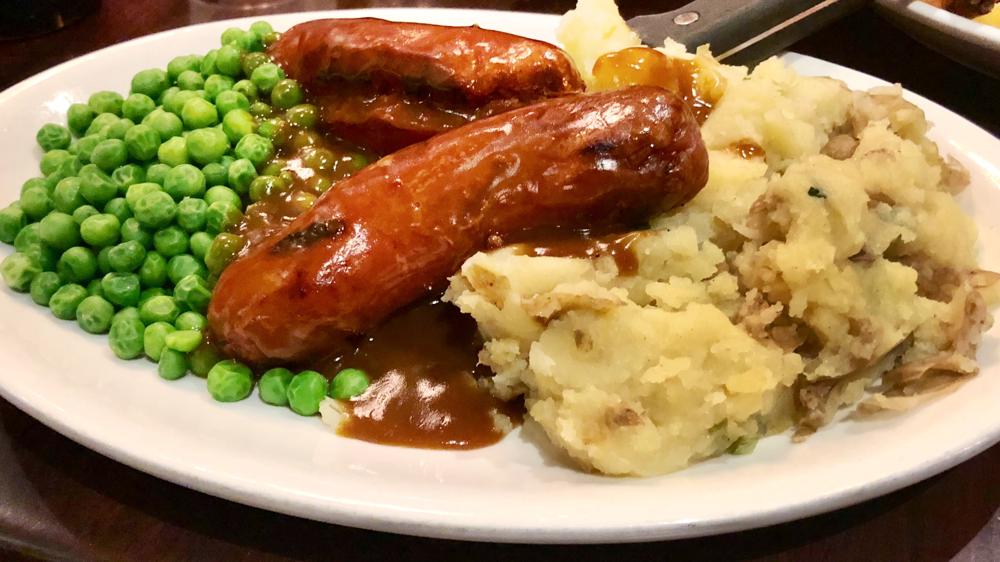

How to: Bangers and Mash with Onion Gravy

Description
Bangers and mash gets its name because sausages used to bang or burst while cooking. Mash, meanwhile, refers to the mashed potatoes. This recipe was a staple at our home in Dublin at Halloween. It is a very cheap, very traditional supper, and one that truly requires good sausage. Please note that this is a very thin gravy, as is traditional. It will still be very liquidy.
Ingredients
- 4 links pork sausage
- 2 pounds potatoes, peeled and cubed
- ¼ cup butter
- 2 tablespoons milk (Optional)
- 1 teaspoon dry mustard powder
- Salt and ground black pepper to taste
- 1 tablespoon butter
- 2 large onions, chopped
- 6 cups beef broth
- 2 cups red wine
Steps
- Preheat the oven to 200 degrees F (95 degrees C).
- Cook sausages in a skillet over medium-low heat until browned, about 5 minutes per side; transfer to an oven-safe dish and keep warm in the preheated oven.
- Place potatoes into a saucepan over medium heat and cover with water; bring to a boil and simmer until potatoes are tender, 10 to 15 minutes. Drain and allow to steam dry for a minute or two. Mix in 1/4 cup of butter, milk, dry mustard, salt, and black pepper; mash until fluffy and smooth. Set aside.
- Melt 1 tablespoon butter in a skillet over medium-high heat. Add onions; cook and stir until translucent and just starting to brown, about 8 minutes. Pour in beef broth and red wine; bring to a boil and simmer until reduced to half its volume, about 10 minutes. Season with salt and black pepper.
- Serve sausages with mashed potatoes; pour onion gravy on top.
Source: allrecipes.com
Homepage